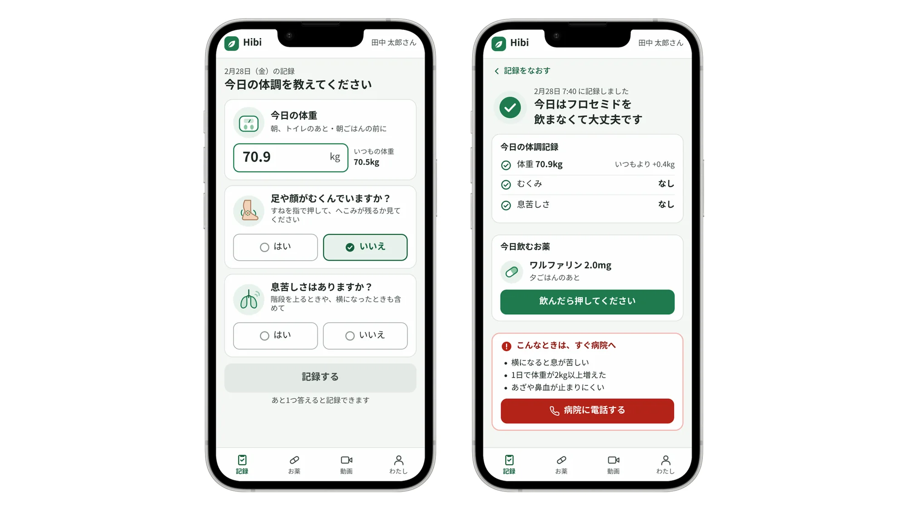
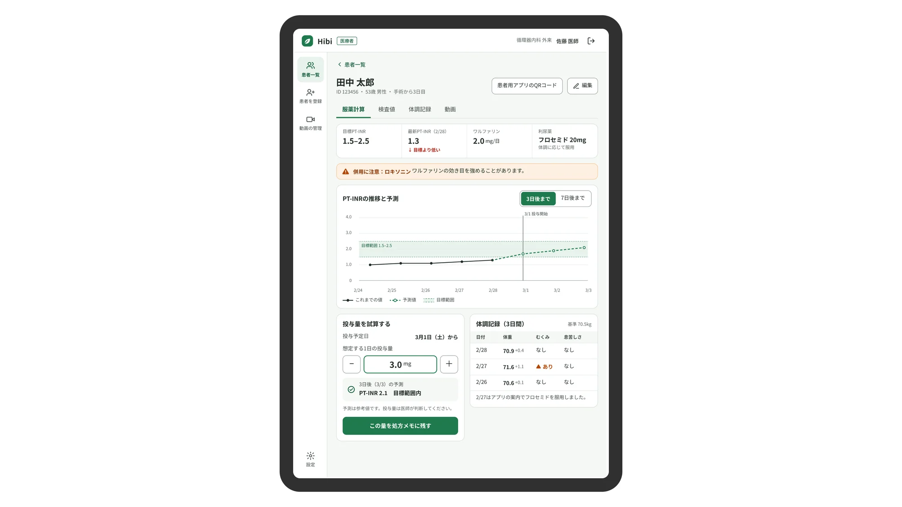

慢性疾患の患者が日々の服薬を記録し、薬剤師がそれを見ながら支援するアプリです。患者本人と薬剤師、性質のまったく違う2種類のユーザーが同じプロダクトを使うという構造でした。
そこでまず、ログインを分けました。同じ画面で両方を満たそうとすると、どちらにとっても中途半端になるためです。
以降は、それぞれに何を優先したかを書きます。
担当範囲
- 依頼者との要件ヒアリングへの参画
- 情報設計・画面設計
- UI デザイン
ユーザー課題を要件に翻訳し、設計に落とすところまでを担当しました。
一患者側｜「続けられること」だけを優先した
服薬管理アプリは、機能が足りないことより、使われなくなることで失敗します。毎日、何年も続ける行為の記録なので、一度でも面倒だと感じられたら終わりです。
そのため、患者側では情報量や機能の充実をあえて追わず、記録の負荷を下げることに集中しました。
- 入力はすべて選択式にする
- 文字を打たせない。片手で、数秒で終わる。
- ワンステップで完了させる
- 確認画面や複数階層を挟まない。
- 表示は簡潔に保つ
- 見るべきものを絞り、迷う要素を置かない。
体調が悪い日ほど記録は途切れます。調子が悪いときでも操作できることを基準に置きました。
継続率を上げる方法として、通知やゲーミフィケーションのような仕掛けを足す選択肢もありました。しかし、そもそもの操作が重いままで仕掛けを足しても、続かないものは続きません。動機づけを足す前に、やめる理由を取り除く判断をしています。

二薬剤師側｜どこまでが事実で、どこからが予測か
複雑さが集中したのは薬剤師側でした。
検査値を入力すると、その後の予測値をグラフで表示する要件があります。ここには設計上の危うさがありました。実測値と予測値が同じ線の上に並ぶと、区別されずに読まれます。
予測は、あくまで推定です。それが確定した検査結果と同じ見え方をしていると、判断の前提が狂います。医療の文脈では、この曖昧さは許容できません。
そこで、実測と予測の境界が一目で分かることをグラフ設計の第一要件に置きました。どこまでが実際に測った値で、どこからが計算された見込みなのか。読み手が意識しなくても区別がつく状態にしています。

グラフの役割は、きれいに見せることではなく、判断に必要な区別を落とさないことだと考えています。